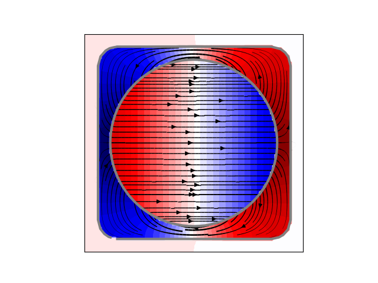
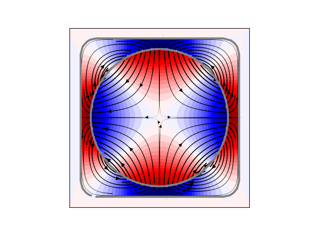
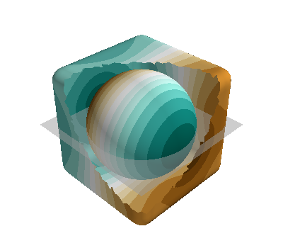

Note
Click here to download the full example code
Design a field of a closed enclosed in a volume¶
import numpy as np
import matplotlib.pyplot as plt
from mayavi import mlab
# import trimesh
from bfieldtools.mesh_conductor import MeshConductor, StreamFunction
from bfieldtools.mesh_magnetics import magnetic_field_coupling as compute_C
from bfieldtools.mesh_magnetics import (
magnetic_field_coupling_analytic as compute_C_analytic,
)
from bfieldtools.mesh_magnetics import scalar_potential_coupling as compute_U
from bfieldtools.mesh_impedance import mutual_inductance_matrix
from bfieldtools.contour import scalar_contour
from bfieldtools.viz import plot_3d_current_loops
from bfieldtools.sphtools import compute_sphcoeffs_mesh
from bfieldtools.suhtools import SuhBasis
from bfieldtools import sphtools
from bfieldtools.utils import load_example_mesh
# domain = 'sphere'
# domain = 'cube'
domain = "combined"
if domain == "sphere":
from trimesh.creation import icosphere
mesh1 = icosphere(3, 0.65)
mesh2 = icosphere(3, 0.8)
elif domain == "cube":
from trimesh.creation import box
from trimesh.smoothing import filter_laplacian
mesh1 = box((1.0, 1.0, 1.0))
mesh2 = box((1.5, 1.5, 1.5))
for i in range(4):
mesh1 = mesh1.subdivide()
mesh2 = mesh2.subdivide()
mesh1 = filter_laplacian(mesh1)
mesh2 = filter_laplacian(mesh2, 0.9)
elif domain == "combined":
import trimesh
import pkg_resources
from trimesh.creation import icosphere
mesh1 = icosphere(4, 0.65)
mesh2 = load_example_mesh("cube_fillet")
mesh2.vertices -= mesh2.vertices.mean(axis=0)
mesh2.vertices *= 0.15
# mesh2 = mesh2.subdivide()
coil1 = MeshConductor(
mesh_obj=mesh1,
N_sph=7,
inductance_nchunks=100,
fix_normals=False,
inductance_quad_degree=2,
)
coil2 = MeshConductor(
mesh_obj=mesh2,
N_sph=7,
inductance_nchunks=100,
fix_normals=False,
inductance_quad_degree=2,
)
M11 = coil1.inductance
M22 = coil2.inductance
# Add rank-one matrix, so that M22 can be inverted
M22 += np.ones_like(M22) / M22.shape[0] * np.mean(np.diag(M22))
M11 += np.ones_like(M11) / M11.shape[0] * np.mean(np.diag(M11))
M21 = mutual_inductance_matrix(mesh2, mesh1)
M = np.block([[M11, M21.T], [M21, M22]])
x = y = np.linspace(-0.85, 0.85, 100)
X, Y = np.meshgrid(x, y, indexing="ij")
points = np.zeros((X.flatten().shape[0], 3))
points[:, 0] = X.flatten()
points[:, 1] = Y.flatten()
CB1 = compute_C_analytic(mesh1, points)
CB2 = compute_C_analytic(mesh2, points)
CU1 = compute_U(mesh1, points)
CU2 = compute_U(mesh2, points)
Out:
Computing the inductance matrix...
Computing self-inductance matrix using rough quadrature (degree=2). For higher accuracy, set quad_degree to 4 or more.
Computing triangle-coupling matrix
Inductance matrix computation took 11.40 seconds.
Computing the inductance matrix...
Computing self-inductance matrix using rough quadrature (degree=2). For higher accuracy, set quad_degree to 4 or more.
Computing triangle-coupling matrix
Inductance matrix computation took 11.39 seconds.
Estimating 24888 MiB required for 2665 by 2562 vertices...
Computing inductance matrix in 60 chunks (10661 MiB memory free), when approx_far=True using more chunks is faster...
Computing triangle-coupling matrix
Computing magnetic field coupling matrix analytically, 2562 vertices by 10000 target points... took 35.74 seconds.
Computing magnetic field coupling matrix analytically, 2665 vertices by 10000 target points... took 36.15 seconds.
Computing scalar potential coupling matrix, 2562 vertices by 10000 target points... took 31.22 seconds.
Computing scalar potential coupling matrix, 2665 vertices by 10000 target points... took 32.54 seconds.
suh = SuhBasis(mesh1, 100)
b1 = mesh1.vertex_normals[:, 0]
b2 = (
mesh1.vertex_normals[:, 0] * mesh1.vertices[:, 0]
- mesh1.vertex_normals[:, 1] * mesh1.vertices[:, 1]
)
def plot_plane(opacity=0.8):
mlab.triangular_mesh(
np.array([x[0], x[-1], x[-1], x[0]]),
np.array([x[0], x[0], x[-1], x[-1]]),
np.zeros(4),
np.array([[0, 1, 2], [2, 3, 0]]),
color=(0.7, 0.7, 0.7),
opacity=opacity,
)
for bi in (b1, b2):
bb = np.zeros(M.shape[1])
bb[: M11.shape[1]] = bi
I = np.linalg.solve(M, bb)
I1 = I[: M11.shape[1]]
I2 = I[M11.shape[1] :]
B1 = CB1 @ I1
B2 = CB2 @ I2
U1 = CU1 @ I1
U2 = CU2 @ I2
# Plot
# Extract the cross-sections of the plane and the surfaces
cc1 = scalar_contour(mesh1, mesh1.vertices[:, 2], contours=[-0.001])[0]
cc2 = scalar_contour(mesh2, mesh2.vertices[:, 2], contours=[-0.001])[0]
B = (B1.T + B2.T)[:2].reshape(2, x.shape[0], y.shape[0])
lw = np.sqrt(B[0] ** 2 + B[1] ** 2)
lw = 2 * lw / np.max(lw)
xx = np.linspace(-1, 1, 16)
# seed_points = 0.51*np.array([xx, -np.sqrt(1-xx**2)])
# seed_points = np.hstack([seed_points, (0.51*np.array([xx, np.sqrt(1-xx**2)]))])
seed_points = np.array([cc1[:, 0], cc1[:, 1]]) * 1.01
# plt.streamplot(x,y, B[1], B[0], density=2, linewidth=lw, color='k',
# start_points=seed_points.T, integration_direction='both')
U = (U1 + U2).reshape(x.shape[0], y.shape[0])
U /= np.max(U)
plt.figure()
plt.contourf(X, Y, U.T, cmap="seismic", levels=40)
# plt.imshow(U, vmin=-1.0, vmax=1.0, cmap='seismic', interpolation='bicubic',
# extent=(x.min(), x.max(), y.min(), y.max()))
plt.streamplot(
x,
y,
B[1],
B[0],
density=2,
linewidth=lw,
color="k",
start_points=seed_points.T,
integration_direction="both",
)
plt.plot(cc1[:, 1], cc1[:, 0], linewidth=3.0, color="gray")
plt.plot(cc2[:, 1], cc2[:, 0], linewidth=3.0, color="gray")
plt.xticks([])
plt.yticks([])
plt.axis("image")
# Plot "coils"
mlab.figure(bgcolor=(1, 1, 1))
contours1 = scalar_contour(mesh1, I1, 12)
contours2 = scalar_contour(mesh2, I2, 12)
# fig = plot_3d_current_loops(contours1, tube_radius=0.005, colors=(1,1,1))
surf = mlab.triangular_mesh(
*mesh1.vertices.T, mesh1.faces, scalars=I1, colormap="seismic"
)
surf.actor.mapper.interpolate_scalars_before_mapping = True
surf.module_manager.scalar_lut_manager.number_of_colors = 16
# plot_3d_current_loops(contours2, tube_radius=0.005, figure=fig, colors=(0,0,0))
faces2_masked = mesh2.faces[
np.linalg.norm(mesh2.triangles_center - np.array([0.75, 0.75, 0.75]), axis=1)
> 1.2
]
surf = mlab.triangular_mesh(
*(mesh2.vertices * 0.99).T,
faces2_masked,
scalars=I2,
colormap="seismic",
opacity=1.0
)
surf.actor.mapper.interpolate_scalars_before_mapping = True
surf.module_manager.scalar_lut_manager.number_of_colors = 16
plot_plane(0.5)
- 
- 
- 
mlab.figure(bgcolor=(1, 1, 1))
s1 = mlab.triangular_mesh(
*mesh1.vertices.T, mesh1.faces[:, ::-1], color=(0.5, 0.5, 0.5), opacity=1.0
)
s1.actor.property.backface_culling = True
w1 = mlab.triangular_mesh(
*(mesh1.vertices.T + 0.009 * mesh1.vertex_normals.T),
mesh1.faces,
color=(1, 0, 0,),
representation="wireframe"
)
w1.actor.property.render_lines_as_tubes = True
s2 = mlab.triangular_mesh(
*mesh2.vertices.T, mesh2.faces[:, ::-1], color=(0.5, 0.5, 0.5), opacity=1.0
)
s2.actor.property.backface_culling = True
faces2_masked = mesh2.faces[(mesh2.triangles_center @ np.array([1, 1, 1])) < 1]
w2 = mlab.triangular_mesh(
*(mesh2.vertices.T + +0.009 * mesh2.vertex_normals.T),
faces2_masked,
representation="wireframe",
color=(0, 0, 1)
)
w2.actor.property.render_lines_as_tubes = True
plot_plane()
Total running time of the script: ( 2 minutes 48.179 seconds)